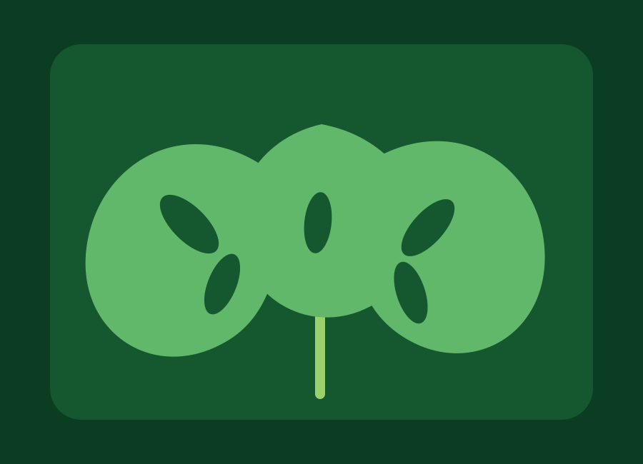
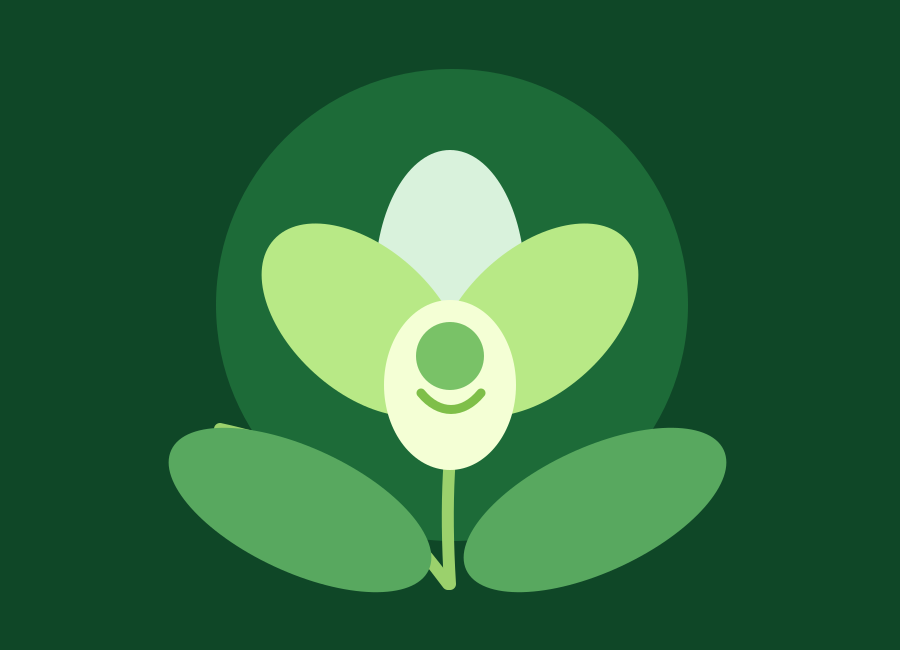

Personalized Care Plans
Users can build care routines based on plant type, light level, soil moisture, humidity, and visible leaf condition.
Blossomflowers helps new and experienced plant lovers understand watering, light, soil, pruning, and seasonal rhythms with practical guidance supported by smart plant-care technology.
Product and Service Features
Blossomflowers combines care education, AI-assisted recommendations, plant tracking, and practical service support for people who want healthier flowers and houseplants without guesswork.
Users can build care routines based on plant type, light level, soil moisture, humidity, and visible leaf condition.
The service helps compare symptoms such as yellowing leaves, browning tips, drooping, wet soil, and poor light exposure.
Guidance adjusts around growth cycles, feeding seasons, pruning periods, rest phases, and flowering expectations.
Care notes help users track watering dates, light changes, pest checks, new growth, and bloom behavior over time.
Blossomflowers can recommend plants based on home lighting, maintenance time, design goals, and beginner-friendly care needs.
Simple reminders can support watering checks, rotation, cleaning, pruning, feeding, and weekly plant observations.
Care Guides
Healthy plants usually need fewer dramatic fixes. Start with light, drainage, soil moisture, humidity, and leaf changes before adding products.
Check the top inches of soil, water until excess drains, and avoid letting roots sit in stale water.
Bright indirect light supports many houseplants, while flowering plants often need stronger exposure to bloom well.
Use airy mixes, drainage holes, and pots sized for the current root system rather than the plant you hope to grow.
Adjust watering and feeding as growth slows or accelerates. Plants do not need the same care every month.
Popular Plants
Prefers medium to bright indirect light, steady moisture, and filtered water when possible.
Best for: low-light corners
Loves bright indirect light, chunky soil, and deep watering after the mix partially dries.
Best for: bold indoor foliage
Needs airy bark, careful watering, bright indirect light, and patience between bloom cycles.
Best for: elegant flowersAI Technologies
Blossomflowers uses AI concepts to help plant owners notice patterns, compare symptoms, and plan care before small problems become expensive replacements.
Describe leaf color, soil moisture, light exposure, and recent changes. The assistant turns those observations into a focused next step.
Computer vision concepts can compare leaf spots, browning edges, wilting, and discoloration against common plant stress signals.
Light, pot size, soil type, and room humidity help estimate when the plant is likely to need water again.
Seasonal data can guide feeding, pruning, rest periods, and light adjustments for stronger flowers.
Smart recommendations can match plants to homes by window direction, care time, pets, and design goals.
Care Finder
The Care Finder turns everyday observations into a practical starting plan. Instead of guessing, compare plant type, light, soil moisture, humidity, and leaf condition, then adjust the routine by watching how the plant responds.
Journal
The Blossomflowers journal is a practical record of what happens between watering days. It helps you notice light changes, new growth, pests, soil behavior, and bloom cycles before they become serious problems.
Most indoor plants lean toward the strongest light source. Rotating pots a quarter turn every two weeks keeps stems upright, leaves evenly spaced, and flowering plants from becoming heavy on one side.
Journal note: record the window direction and whether the plant is leaning, stretching, or staying compact.Dust reduces how much light reaches the leaf surface. Wipe broad leaves with a soft damp cloth, support each leaf from underneath, and avoid leaf-shine products that can clog pores.
Journal note: check the underside of leaves while cleaning for webbing, tiny dots, sticky residue, or eggs.Pruning is not only for appearance. Removing dead leaves, spent flowers, and weak stems helps the plant redirect energy into roots, new shoots, and stronger blooms.
Journal note: write down what you removed and whether the cut area stays dry and healthy.A plant that needed water every five days in spring may need far less in a rainy or cooler week. The journal should track soil feel, pot weight, and leaf posture, not just calendar dates.
Journal note: mark whether the top soil was dry, damp, or wet before each watering.Light changes as the sun angle shifts, curtains move, and nearby trees grow fuller. A bright spot in one month can become too dim or too harsh later in the year.
Journal note: photograph the plant in the morning and afternoon once a month to compare light exposure.Flowering plants often bloom after a pattern of rest, feeding, and correct light. Keeping notes on buds, spent flowers, and fertilizer timing helps you repeat what worked.
Journal note: track the first bud, full bloom, fading date, and any care changes made that week.Weekly Rhythm
Use the same short checklist each week so your notes become easy to compare over time. Consistent observations are more useful than long entries written only when a plant looks stressed.